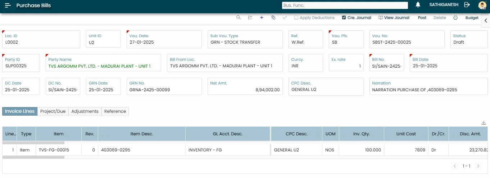

<div data-category="Financials" data-title="GRN Stock Transfer (With reference)" data-updated="December 01, 2025" data-contributors="RoadmapIT" data-breadcrumb="Home,Financials,GRN-Stock Transfer (With reference)">
  <div class="page-content">
    <p>A stock transfer GRN is a document that records the receipt of goods from one location to another within the same company. A stock transfer GRN confirms that the goods have been delivered and received by the destination location, and that they match the stock transfer order details.</p>
    <p>This screen is to view the Invoice receipt for GRN-Stock Transfer type.</p>
    <h5>Navigation path:</h5>
    <p class="fs-6">Financials \ Transactions \ Party Document\Purchase Bills</p>
    <h2>Registering Invoice</h2>
    
    <ul style="list-style-type: none; align-content: center">
      <li class="mouse-icon">Invoice created from GRN Stock Transfer will be displayed in this screen with the Matching GRN-Stock Transfer</li>
      <li class="mouse-icon">Entries can also be entered with the type GRN-Stock Transfer and the GRN document can be fetched from Get document button.</li>
      <li class="mouse-icon">Click on Create Journal and the journal gets created.</li>
      <li class="mouse-icon">Press the post button to complete the entry and the document can be forwarded for approval</li>
    </ul>
  </div>
</div>
